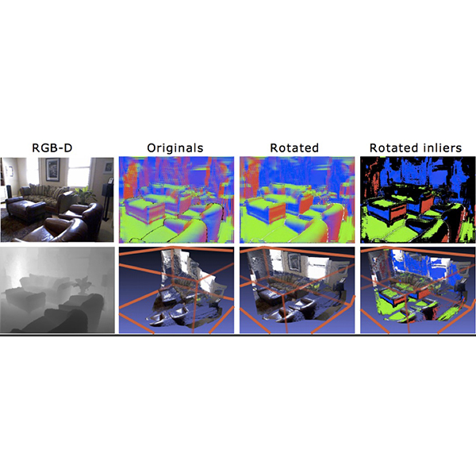
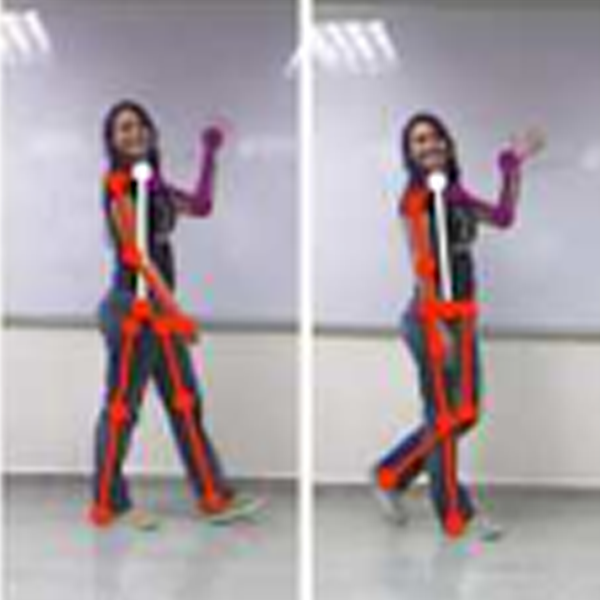
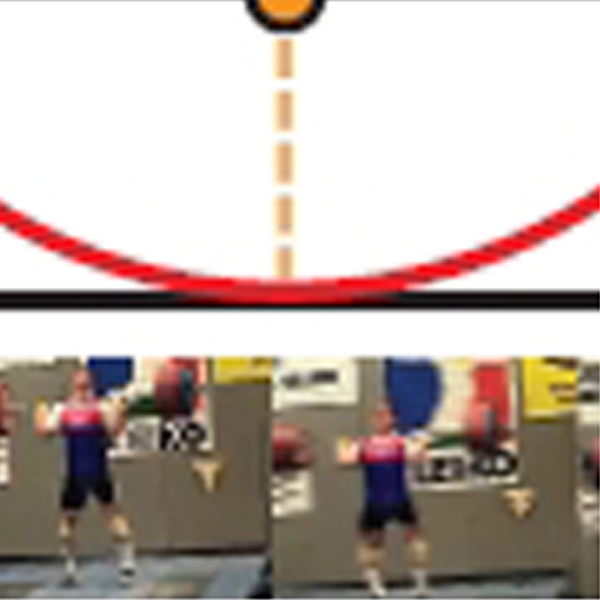
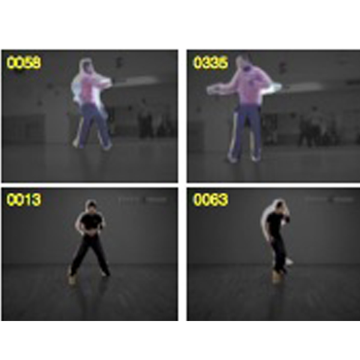

Datasets
-
ActivityNet
ActivityNet: A Large-Scale Video Benchmark for Human Activity Understanding
Fabian Caba, Victor Escorcia, Bernard Ghanem, Juan Carlos Niebles IEEE Conference on Computer Vision and Pattern Recognition (CVPR) Boston, USA. June 2015.
-

Robustness to Outliers in Manhattan Frame Estimation
Robust Manhattan Frame Estimation from a Single RGB-D Image
Bernard Ghanem, Ali Thabet, Juan Carlos Niebles, Fabian Caba IEEE Conference on Computer Vision and Pattern Recognition (CVPR) Boston, USA. June 2015.
-

Composable Activities
Discriminative Hierarchical Modeling of Spatio-Temporally Composable Human Activities
Ivan Lillo, Alvaro Soto, Juan Carlos Niebles IEEE Conference on Computer Vision and Pattern Recognition (CVPR) Colombus, USA. June 2014.
-

Olympic Sports
Modeling Temporal Structure of Decomposable Motion Segments for Activity Classification
Juan Carlos Niebles, Chih-Wei Chen and Li Fei-Fei. European Conference on Computer Vision (ECCV) Hersonissos, Crete, Greece. September 2010.
-

Moving People
Extracting Moving People from Internet Videos
Juan Carlos Niebles, Bohyung Han, Andras Ferencz and Li Fei-Fei European Conference on Computer Vision (ECCV) Marseilles, France. 2008.
- The Joint 2D-3D-Semantic (2D-3D-S) Dataset is available here.
- The Stanford Online Products dataset is available here.
- The ObjectNet3D Dataset is available here.
- The Stanford Drone Dataset is available here.
- The Stanford Large-Scale Indoor Spaces 3D dataset is available here.
- The Multiview Tracking dataset is available here.
- The PASCAL3D+ dataset is available here.
- The datasets used in the Semantic Structure From Motion project are available here.
- The 3D Object dataset is available here, mirror.
- The Collective Activity dataset is available here.
- The 3D DeskTop dataset is available here.
Software and Source Code
- The source code of the 3D-Recurrent Reconstruction Neural Network project is available here.
- The source code of the Learning to Track: Online Multi-Object Tracking by Decision Making project is available here.
- The source code of the Enriching Object Detection with 2D-3D Registration and Continuous Viewpoint Estimation is available here.
- The source code of the Combining 3D Shape, Color, and Motion for Robust Anytime Tracking project is available here.
- The source code of the Estimating the Aspect Layout of Object Categories project is available here.
- The source code of the Semantic Structure From Motion project is available here.
- The source code of the Efficient and Exact Branch-and-Bound project is available here.
- The source code of the Multiple Target Tracking project is available here.
Gallery
- 2015 joint Vision Lab and CVGLab retreat
- BBQ in summer 2010
- Midwest Computer Vision Workshop on 9/20/2012 in UIUC
{kind=link}